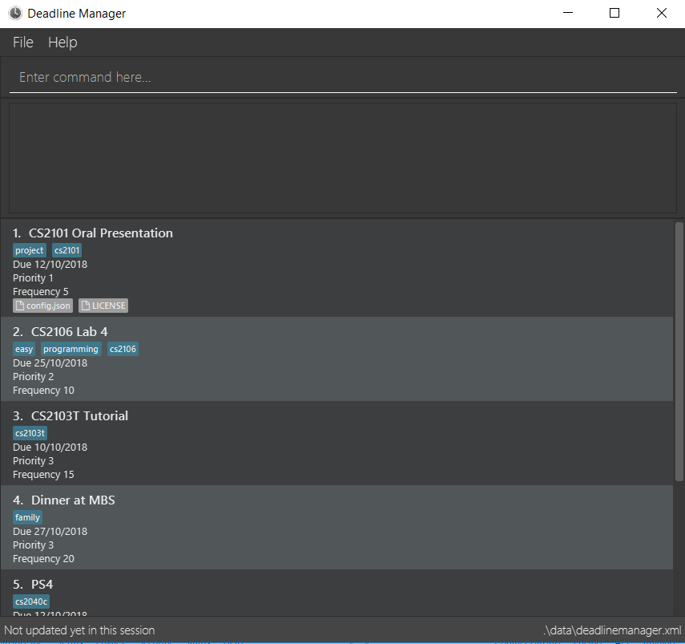

By: CS2103-AY1819S1-W17-4 Since: Sep 2018 Licence: MIT
- 1. Introduction
- 2. Quick Start
- 3. Features
- 3.1. Viewing help :
help - 3.2. Adding a task:
add - 3.3. Completing a task :
complete - 3.4. Listing all tasks :
list - 3.5. Editing a task :
edit - 3.6. Filtering a list of tasks:
filter - 3.7. Sorting a list of tasks :
sort - 3.8. Resolving tasks :
resolve(coming in v2.0) - 3.9. Snoozing tasks :
snooze(coming in v2.0) - 3.10. Managing attachments of a task :
attachment - 3.11. Importing a set of tasks:
import - 3.12. Exporting a set of tasks:
export - 3.13. Deleting a task :
delete - 3.14. Selecting a task :
select - 3.15. Listing entered commands :
history - 3.16. Undoing previous command :
undo - 3.17. Redoing the previously undone command :
redo - 3.18. Clearing all entries :
clear - 3.19. Exiting the program :
exit - 3.20. Saving the data
- 3.1. Viewing help :
- 4. FAQ
- 5. Command Summary
- 6. Glossary
1. Introduction
Deadline Manager (DLM) is for those who prefer to use a desktop app for keeping track of tasks. More importantly, DLM is optimized for those who prefer to work with a Command Line Interface (CLI) while still having the benefits of a Graphical User Interface (GUI). If you can type fast, DLM can help you sort out your upcoming tasks faster than traditional GUI apps. Interested? Jump to the Section 2, “Quick Start” to get started. Enjoy!
2. Quick Start
The steps to quickly get started with the project are as follows -
-
Install Java version
9or later on your Computer. -
Download the latest
addressbook.jarhere. -
Copy the file to the folder you want to use as the home folder for your deadline manager.
-
Double-click the file to start the app. The GUI should appear in a few seconds.
 -
Type the command in the command box and press Enter to execute it.
e.g. typinghelpand pressing Enter will open the help window. -
Some example commands you can try:
-
list: lists all tasks -
addn/v1.1 milestone d/2/10/2018 t/CS2103T p/1: adds a task namedv1.1 milestoneto the deadline manager. -
delete3: deletes the 3rd task shown in the current list -
exit: exits the app
-
-
Refer to Section 3, “Features” for details of each command.
3. Features
Command Format
-
Words in
UPPER_CASEare the parameters to be supplied by the user e.g. inadd n/NAME,NAMEis a parameter which can be used asadd n/Assignment 2. -
Items in square brackets are optional e.g
n/NAME [t/TAG]can be used asn/Assignment 2 t/CS3230or asn/Assignment 2. -
Items with
… after them can be used multiple times including zero times e.g.[t/TAG]…can be used ast/CS2103,t/CS2103 t/Projectetc. -
Parameters can be in any order e.g. if the command specifies
n/NAME d/DEADLINE,d/DEADLINE n/NAMEis also acceptable.
3.2. Adding a task: add
Adds a task to the deadline manager
Format: add n/NAME [P/PRIORITY] [f/FREQUENCY] d/DEADLINE [t/TAG]…
| A task can have any number of tags (including 0) |
| You can have two tasks with the same attributes! |
Examples:
-
add n/Assignment 2 d/1/1/2018 p/1
Adds a task with nameAssignment 2with a deadline on 1st January 2018 with priority 1 (highest priority). -
add n/v1.1 milestone d/9/10/2018 t/CS2103T t/Project p/2
Adds a task with namev1.1 milestonewith a deadline on 9th October 2018 with priority 2 (second highest priority). It is additionally tagged with 2 tags:CS2103TandProject.
3.3. Completing a task : complete
Completes an existing task in the deadline manager.
If the task is not recurred (the frequency is equal to 0),
the task will be deleted.
Otherwise, the deadline will be moved
to the next occurrence.
Format: complete INDEX
Examples:
-
complete 1
Completes the first task in the displayed task list.
3.4. Listing all tasks : list
Shows a list of all tasks in the deadline manager.
Format: list
3.5. Editing a task : edit
Edits an existing task in the deadline manager.
Format: edit INDEX [n/NAME] [P/PRIORITY] [f/FREQUENCY] [d/DEADLINE] [t/TAG]…
Examples:
-
edit 1 d/3/10/2018
Edits the deadline of the 1st task to 3rd October 2018. -
edit 2 n/v1.2 Milestone t/
Edits the name of the 2nd task to bev1.2 Milestoneand clears all existing tags. -
edit 1 P/1
Edits the priority of the 1st task to 1 (highest priority).
3.6. Filtering a list of tasks: filter
Filters the current list of tasks with a specified filter expression.
Format: filter FILTER_EXPRESSION
When this command is used, Deadline Manager will display only those tasks which satisfies the given filter expression.
Filter predicates are the core of the filter command. Each filter predicate specifies a particular attribute (e.g. deadline, priority) and a value to test this attribute against (e.g. deadline being earlier than 1/10/2018). Filter predicates are regarded as "indivisible".
| Filter predicates are indivisible becuase each filter predicate represents a single rule for filtering - a specified field (e.g. deadline) is compared against some specified value (e.g. 1/10/2018). There is no way to decompose a filter predicate into smaller parts. |
Filter expressions (i.e. the FILTER_EXPRESSION strings) are composed from any number of filter predicates, and they create a composite rule to filter against. The filter command is designed to accept arbitrarily complex filter expressions that can be composed from any number of filter predicates.
The format for FILTER_EXPRESSION is defined recursively in the following paragraphs.
FILTER_EXPRESSION is a string in the following format:
-
FILTER_PREDICATE— This filter expression contains a single filter predicate -
FILTER_EXPRESSION & FILTER_EXPRESSION— This filter expression is a logical conjunction (i.e. AND) of two other filter expressions. The operator&may be substituted with&&. -
FILTER_EXPRESSION | FILTER_EXPRESSION— This filter expression is a logical disjunction (i.e. OR) of two other filter expressions. The operator|may be substituted with||. -
! FILTER_EXPRESSION— This filter expression is a logical negation (i.e. NOT) of two other filter expressions. -
( FILTER_EXPRESSION )— This filter expression is surrounded by parentheses.
Intuitively, the syntax for filter expressions mirrors that of arithmetic expressions such as 1+3*4 and (1+4+6)*2.
|
FILTER_PREDICATE is a string in the following format: <key><operator><phrase>:
-
where
keyis an alphanumeric string that describes the attribute being compared. Example -priority,tagandname -
where
operatoris one of:,=,<,> -
where
phraseis a string that describes what to search (this is called the search phrase)
The operator : is known as the convenience operator — it is an alias for the operator that intuitively does what you expect for the given key. More details are given below.
The < and > operators are non-strict: Every task that will be shown using = will also be shown using < or >.
In general, both key and phrase do not need to be placed in quotes. However, if whitespace or special chracters (i.e. those that have a meaning for compositing filter expressions) are part of phrase, then phrase must be in quotes (either single or double quotes will work, but the opening and closing quotes must be of the same type).
Examples:
-
filter due<1/10/2018Returns a subset of the current list of tasks that have deadlines on or before 1st October 2018. -
filter d=1/10/2018Returns a subset of the current list of tasks that have deadlines equal to 1st October 2018. -
filter d:1/10/2018Returns a subset of the current list of tasks that have deadlines on or before 1st October 2018. -
filter name:AlexReturns a subset of the current list of tasks that have a name that contains "Alex". -
filter n:"Alex Tan"Returns a subset of the current list of tasks that have a name that contains "Alex Tan". -
filter p=1Returns a subset of the current list of tasks that have priority = 1 (highest priority). -
filter p>3Returns a subset of the current list of tasks that have priority = 1, 2, or 3. (Highest priority, second highest priority, or third highest priority.) -
filter f=1Returns a subset of the current list of tasks that recurs daily. -
filter f<7Returns a subset of the current list of tasks that recurs at least once a week. -
filter t:CS2103TReturns a subset of the current list of tasks that has the tag "CS2103T". -
filter t:CS2103T,CS2101Returns a subset of the current list of tasks that has both the tags "CS2103T" and "CS2101". -
filter assignment CS2101Returns a subset of the current list of tasks that have a name or tag list that contains "assignment" and a name or tag list that contains "CS2101". -
filter assignment|CS2101Returns a subset of the current list of tasks that have a name or tag list that contains "assignment" or "CS2101". -
filter 1/10/2018Returns a subset of the current list of tasks that have deadlines on or before 1st October 2018. (If a task has a name or tag list that contains the string "1/10/2018", it will also be returned.) -
filter ! t:CS2101Returns a subset of the current list of tasks that do not have the tag "CS2101". -
filter n:assignment | (p:3 & t:CS2101)Returns a subset of the current list of tasks that have a name that contains "assignment", or have priority at least 3 and contains tag "CS2101". -
filter n:assignment||(p:3 t:CS2101)Returns a subset of the current list of tasks that have a name that contains "assignment", or have priority at least 3 and contains tag "CS2101". -
filter !n:homework||(p:3 t:CS2101)Returns a subset of the current list of tasks that have a name that does not contain "homework", or have priority at least 3 and contains tag "CS2101".
3.7. Sorting a list of tasks : sort
Sorts the lists of all the tasks which the user is currently viewing. Generally meant to be used in combination with filter.
When this command is used, Deadline Manager will sort all the currently displayed tasks according to the user specified comparison method.
Sort comparators are the core of the sort command. Each sort comparator specifies a particular attribute (Example - name, priority) and a comparison direction, i.e ascending or descending.
The entire sorting command is composed of a chain of sort comparators. This chain helps the user to define which tasks to show earlier and which ones to show latter.
Format: sort SORT_COMPARATOR [SORT_COMPARATORS]…
Examples:
-
sort n>
Sorts the current list of tasks in view in descending order by name, where sorting is done in alphabetical order. -
sort due< name>
Sorts the current list of tasks in view in ascending order by due date, where ties are broken by descending order of names. -
sort priority<
Sorts the current list of tasks in view in ascending order by priority. -
sort tag<{cs2100 family cs2103t}
Sorts the current list of tasks in view in ascending order by tags. In this case all the tasks with the tagcs2100will be placed before those tasks with the tagfamily, finally followed by those tasks with the tagcs2103t.
3.8. Resolving tasks : resolve (coming in v2.0)
Deletes a specified task from the deadline manager. The index refers to the entries of a previous call to list or search.
Format: resolve INDEX
Examples:
-
resolve 1
The 1st task displayed by the deadline manager will be deleted.
3.9. Snoozing tasks : snooze (coming in v2.0)
Hides a specified task from the deadline manager until the time specified in the parameter has elapsed. The index refers to the entries of a previous call to list or search.
Format: snooze INDEX d/DEADLINE
Examples:
-
snooze 1 d/20/09/2018
A task is 'snoozed' as its deadline is now shifted backwards to 20th September 2018.
3.10. Managing attachments of a task : attachment
Allows the user to add, list, delete and retrieve files associated with a specific task.
Deadline manager does not make a copy or backup the files added. Only the location of the files are stored and it can be modified, renamed, moved or deleted without Deadline manager’s knowledge. As such, there is no guarantee for a file associated with a specific task to always exist.
Format: INDEX COMMAND [p/FILEPATH] [n/FILENAME]
| The application does not allow adding more than one file with the same filename to the same task, even if they are in different locations on the computer. |
Examples:
-
Add:
attachment 1 add p/C:\Documents\HelloWorld.docx
Adds an attachment located at "C:\Documents\HelloWorld.docx" to the 1st task in the deadline manager. -
Get:
attachment 2 get p/C:\Documents\TaskAttachments.zip n/Assignment.zip
Saves an attachment named "Assignment.zip" of the 2nd task in the deadline manager to "C:\Documents\TaskAttachments.zip" -
List:
attachment 1 list
Lists all attachments currently associated with the 1st task in the deadline manager. -
Delete:
attachment 1 delete n/HelloWorld.docxRemoves the association of the attachment named "HelloWorld.docx" with the 1st task in the deadline manager.
The import, export commands described below do NOT support backing up attachments. However they will keep a link to the attachments path if any.
|
3.11. Importing a set of tasks: import
Imports tasks that were previous generated by an export command. Tasks will be retrieved from the provided FILENAME location.
Format: import f/FILENAME [r/all | r/overwrite | r/skip]
Additionally, optional commands can provided to specify what Deadline Manager should do when there is an import conflict.
| An import conflict occurs when you try to import a task, but a similar task already exists in your Deadline Manager. |
You can input either one of three commands to specify how to resolve an import conflict:
-
r/all: Imports the new task, and keeps both the existing and incoming tasks. -
r/overwrite: Imports the new task, and overwrites/discards the existing task. -
r/skip: Does not import the conflicting task, but keeps the existing task instead.
If you do not specify any command, Deadline Manager uses r/skip by default, i.e. it will ignore new tasks that cause import conflicts.
|
Examples:
-
import f/cs2103.txt
Imports all tasks fromcs2103.txt. If an incoming task already exists in Deadline Manager, it is skipped. -
import f/cs2101.xml r/all
Imports all tasks fromcs2101.xml. Even if an incoming task exists in Deadline Manager, it is still imported. -
import f/cs2101/timetable.xml
Fails and returns an error ascs2101/timetable.xmlis not a valid filename.
3.12. Exporting a set of tasks: export
Exports the tasks that is currently displayed by the Deadline Manager. The tasks will be saved as a file at the provided FILENAME location.
Format: export f/FILENAME [r/overwrite]
| You can override the default behaviour by specifying the r/overwrite argument. This will allow you to overwrite files even if they already exist. Use with caution so as not to overwrite important data. |
Examples:
-
export cs2103.txt
Creates and exports tasks tocs2103.txtwithin the same folder as Deadline Manager. -
export cs2101.txt(Exports a file successfully)
export cs2101.txt
Fails and returns an error ascs2101.txtalready exists when the second command is run. To protect your data, the second export command fails. -
export C:\Documents\cs2103.txt
Fails and returns an error ascs2103.txtis not in the same directory as Deadline Manager.
3.13. Deleting a task : delete
Deletes the specified task from the deadline manager.
Format: delete INDEX
Examples:
-
list
delete 2
Deletes the 2nd task in the deadline manager. -
find `OP1 Assignment
delete 1
Deletes the 1st task in the results of thefindcommand.
3.14. Selecting a task : select
Selects the task identified by the index number used in the displayed task list.
Format: select INDEX
Examples:
-
list
select 2
Selects the 2nd task in the deadline manager. -
find Assignment
select 1
Selects the 1st task in the results of thefindcommand.
3.15. Listing entered commands : history
Lists all the commands that you have entered in reverse chronological order.
Format: history
|
Pressing the ↑ and ↓ arrows will display the previous and next input respectively in the command box. |
3.16. Undoing previous command : undo
Restores the deadline manager to the state before the previous undoable command was executed.
Format: undo
|
Undoable commands: those commands that modify the deadline manager’s content ( |
Examples:
-
delete 1
list
undo(reverses thedelete 1command) -
select 1
list
undo
Theundocommand fails as there are no undoable commands executed previously. -
delete 1
clear
undo(reverses theclearcommand)
undo(reverses thedelete 1command)
3.17. Redoing the previously undone command : redo
Reverses the most recent undo command.
Format: redo
Examples:
-
delete 1
undo(reverses thedelete 1command)
redo(reapplies thedelete 1command) -
delete 1
redo
Theredocommand fails as there are noundocommands executed previously. -
delete 1
clear
undo(reverses theclearcommand)
undo(reverses thedelete 1command)
redo(reapplies thedelete 1command)
redo(reapplies theclearcommand)
3.18. Clearing all entries : clear
Clears all task entries from the deadline manager.
Format: clear
3.19. Exiting the program : exit
Exits the program.
Format: exit
3.20. Saving the data
Deadline manager data are saved in the hard disk automatically after any command that changes the data.
There is no need to save manually.
| Attachments are merely linked in the deadline manager. A separate copy of the file will not be stored. If the original attachment file has been deleted, deadline manager will fail to retrieve it. |
4. FAQ
Q: How do I transfer my data to another Computer?
A: Install the app in the other computer and overwrite the empty data file it creates with the file that contains the data of your previous deadline manager folder.
5. Command Summary
-
Add
add n/NAME d/DEADLINE [P/PRIORITY] [t/TAG]…
e.g.add n/CS2103 Assignment d/11/10/2018 P/2 t/java t/hard -
Add Recurring:
addr n/NAME d/DEADLINE f/FREQUENCY [P/PRIORITY] [t/TAG]…e.g.add n/CS2103 Tutorial d/1/10/2018 f/7 P/4 t/easy -
Attachment (Add) :
attachment INDEX add p/FILEPATH -
Attachment (Delete) :
attachment INDEX delete n/FILENAME -
Attachment (List) :
attachment INDEX list -
Attachment (Retrieve) :
attachment INDEX get n/FILENAME p/FILEPATHe.g.attachment 2 get p/C:\Documents\TaskAttachments.zip n/Assignment.zip -
Clear :
clear -
Delete :
delete INDEX
e.g.delete 3 -
Edit :
edit INDEX [n/NAME] [d/DEADLINE] [t/TAG]…
e.g.edit 2 n/CS2103 Assignment 2 t/easy -
Exit :
exit -
Export :
export FILEPATH -
Find :
find KEYWORD [MORE_KEYWORDS]
e.g.find CS2103 CS2102 -
Filter :
filter FILTER_EXPRESSIONe.g.filter due<1/10/2018 -
Help :
help -
History :
history -
Import :
import FILEPATH -
List :
list -
Redo :
redo -
Resolve :
resolve INDEX
e.g.resolve 1 -
Search :
search FILTER_EXPRESSIONe.g.search due<1/10/2018 -
Select :
select INDEX
e.g.select 2 -
Snooze :
snooze INDEX d/DEADLINE
e.g.snooze 1 d/31/06/2018 -
Sort :
sort SORT_COMPARATOR [SORT_COMPARATORS]
e.g.sort due< name> -
Undo :
undo
6. Glossary
-
File Path: a string that defines the unique location of a file in the file system.
-
Subset: a part of a larger group of related things.